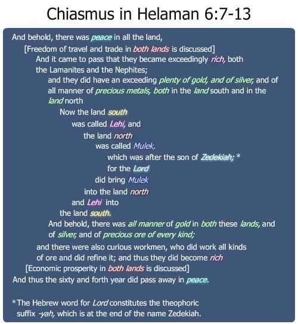

There is a short phrase that is easily overlooked in the Book of Mormon that reports the state of affairs at the end of the sixty-second year of the judges. This phrase signifies a huge swing of the pendulum in Book of Mormon history. Speaking of the large number of converted Lamanites, we read that “their righteousness did exceed that of the Nephites, because of their firmness and their steadiness in the faith.”
The Nephite people of the church had great joy in hearing of the conversion of many Lamanites and the establishment of the church among the Lamanites.
The Lamanites had repented and restored the lands to the Nephites. What did the Lamanites do next? They went out ministering to and teaching the Nephites—likely sharing their conversion stories. Can you imagine being a Nephite at that time? Just a short time before, the Nephites were fighting the Lamanites. Now the Lamanites were among them, wanting to share their testimonies and spiritual experiences. Wow!
The next section of scripture is an annual report that was likely recorded on the large plates of Nephi by a very diligent record-keeper. At the end of every year, a scribe would record a summary of what happened that year on the large plates of Nephi. Mormon usually abridged or summarized the details from these records. Therefore, we do not have many verbatim copies of these annual reports.
The report in verses 7–13, however, is such a beautiful and important annual report that we most likely have it in its entirety and, I think, in its perfect original form. What reason would Mormon have had to modify this annual record? It’s not too long. It states the essence of the year’s main events. It was a gem of a record. This annual report is also written in a pure chiastic form. This chiasm is not only brilliant—it is also a beautifully written annual report. Some scribe, over two thousand years ago, decided he was going to write into the records of eternity this amazing development of freedom of travel that took place in the sixty-fourth year of the reign of judges. He did a wonderful job of writing the summary by using the ancient chiastic literary form. The natural balance inherent in a chiastic structure perfectly represents, in a literary way, the newly instituted balance between these two lands. It is one of the best examples of chiasmus in the Book of Mormon. On top of its equally matched details in the first and second halves, the central turning point of this chiasm works even better in Hebrew than in English—where “the Lord” and the name “Zedekiah,” with its theophoric suffix –iah, meaning “Jehovah” or “the Lord,” dominate the central focal point of the chiasm.
The chiastic structure is as follows:

Figure 2 John W. Welch and Greg Welch, "Chiasmus in Helaman 6:7-13," in Charting the Book of Mormon, chart 13.
Notice that, in verse 7, the annual report and the chiasm begin with peace in the land. The report and chiasm ends in verse 13 with peace.
After the peace, there is mention in verse 8 that the people now for the first time have freedom of travel and trade in both lands. This correlates nicely with economic prosperity in both lands in verse 12.
As a result of their prosperity, both the Lamanites and Nephites became rich— a statement made in parallel at the beginning (in verse 9) and end of the report (in verse 11).
The extent of their riches is also described in parallel phrases. The statement that there was plenty of gold and silver and precious metal in both the land north and the land south (at the end of verse 9) is coupled with the report that there was all manner of gold, silver, and precious ore in both these lands (at the beginning of verse 11).
Verse 10 marks the absolute middle of the chiasm. Notice all ten of the chiastic parallelisms in this one verse: It states, “Now the (a) land south was called (b) Leh i, and the (c) land north (d) Mulek, which was after the son of (e) Zedekiah, for the (e) Lord did bring (d) Mulek into the (c) land north and (b) Lehi into the (a) land south.”
Remember, up to this point if anybody wanted to travel from one land to another land, he would be forced back home as soon as he started to move out. If a Nephite or Lamanite stepped on foreign soil, he could be killed on the spot or imprisoned or taken before the king of that land. Now, both Nephites and Lamanites had freedom to travel between Nephite and Lamanite territory.
The logic for the change in policy is expressed in verse 10 (the center of the chiasm). Since the Lord brought people into both lands, the Lord intended both lands to be filled with people. There was a reciprocity in the dealings of the Lord with the people in both lands.
Therefore, the people should legitimately be allowed to travel between lands. A theological justification was offered for this revolutionary freedom of travel policy.
If the parallelism is to be complete, how can “Zedekiah” stand as the parallel to “Lord” in this chiasm ? For one thing, both Zedekiah and the Lord are kings. More compelling is the fact that the name “Zedekiah” is linguistically based on two Hebrew words: “Zedek” means “righteous” and “iah” (yah) is the theophoric suffix that means “Jehovah” or “the Lord.” So, Zedekiah’s name means “righteous is the Lord.” This results in the word “Lord” being mentioned in immediate succession at the center of this chiasm.
I noticed this chiasm for the first time in March, 1987, and it was published in May, 1987 as a FARMS Update, and soon was made widely available in the 1992 compilation Reexploring the Book of Mormon. I mention this timing because I remember well the late Wednesday night when this chiasmus came to my awareness. I was the bishop of the BYU 36th ward, and students needed interviews with the bishop for many reasons as the end of the winter semester approached. All the other students had come punctually on time.
One in the middle of my scheduled list was still missing. It was getting late. I was tired, and I needed to teach my Honors Book of Mormon class the next morning. I decided to wait, as long as it took. I opened my copy of the Book of Mormon and sat on the couch in the apartment lobby and began to read the next day’s assignment, which spilled over from Helaman 5 into Helaman 6. This annual report separated itself from the surrounding text as a treasure left by an unnamed but very diligent ancient scribe. When the young man sheepishly stuck his head into the lobby, I invited him in. I told him that the Lord had just blessed us both by him being a little late. I shared with him what I had just found. We had a great interview, in spite of his worries. I hope this text has meant as much to him as it has to me all these thirty-three years later.
Thieves were treated differently than robbers under ancient law. Significantly, the same distinction was made under the law in the Book of Mormon. Throughout the Nephite record, robbers were typically organized bands who separated themselves from society, opposed the government, and largely subsisted by plundering their enemies. Thieves, on the other hand, were generally members in the community who were guilty of stealing from fellow citizens. In simple terms, robbers were organized groups of “outsiders” (acting outside the law and the community), whereas thieves were community “insiders” who acted alone. From the viewpoint of the dominant government, robbers were vile menaces to the community and the order of government. Thieves, on the other hand, usually acted alone and did not disrupt the normal operations of government.
From the viewpoint of the marginal, disenfranchized elements of society—the robbers were seen as heroic Robin Hoods. Social banditry emerged from circumstances in society that were perceived by the masses to be unjust and intolerable, including administrative inefficiency, sharp social divisions, economic crises, famines, or prolonged wars. These movements were often rural, giving the poor effective methods of social agitation. They were often led by marginalized military or political figures, usually enjoying the support and protection of their village, and drawing strength from people who had been dislocated, displaced, or otherwise alienated from mainstream society. Social brigands were frequently heroes among the poor, acting as defenders and champions of the common people and sharing the basic values and religion of the peasant society.
There are sixteen characteristics that historians and anthropologists have identified as behavioral characteristics of bandits or robbers—the perennial plague of ancient civilizations. Below is a comparison between profiles of “robbers” and “thieves” in the ancient world. Because the accounts in the book of Helaman mention so many of these factors, let me take this opportunity to run through this profile of robbers and bandits, as contrasted from mere thieves who stole things rather harmlessly from their local villagers: 1. Robbery was committed blatantly in the open; theft, in secret, a minor offense.
2. Robbers were outsiders and were therefore outside the protection of the law; theft usually occurred within the society.
3. Robbers usually acted with greater force and violence than did thieves.
4. Robbers acted in a group or band (hence, they are called “bandits,” highwaymen, brigands); thieves mostly acted alone.
5. Robbers were organized in professional groups. Usually bands of 15 to 40 men, but one had 10,000 men. They often had their own leader, code, priests, and so on, sometimes drawing together dissidents, foreigners, and social outcasts.
6. Robbers bound themselves together with oaths and sacrifices, making them heretics as well as criminals.
7. Robbers kept their hideouts secret, accentuating their sinister reputation.
8. Robbers operated with raids, assassinations, and terrorism.
9. Robbers would harass the highways or disrupt commerce, primarily to weaken local governments.
10. Robbers posed a great military threat to the society.
11. Robbers often demanded ransom or used extortion.
12. Robbers were considered outlaws and could be dealt with under martial law or no law at all.
13. The government bore the duty to clear the highways and keep the bands of robbers in check. These bands were usually short-lived.
14. Robbers could be executed; thieves could not.
15. Captured robber leaders were treated especially harshly.
16. Robbers were considered instruments of God’s wrath afflicting a wicked nation